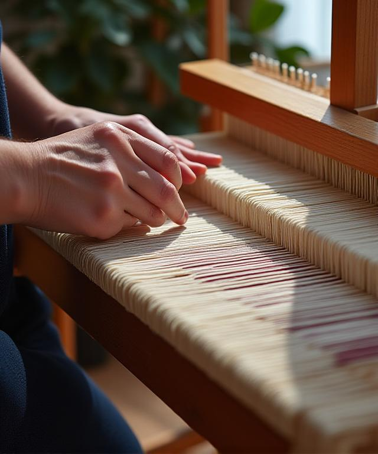

Master the Art of Textiles at LoomLore Academy
We're merging the intricate heritage of floor-loom weaving with the urgent demands of sustainable, contemporary art. Our New York studio offers a curriculum led by masters of the craft, designed for those who don't just want to learn, but to pioneer. Why settle for mass-produced when you can create the timeless?
Explore Course Catalog
Advanced Textile Art
Master complex structural techniques and conceptual expression in our 12-week intensive.
Weaving Workshops
Direct exposure to semi-industrial and manual looms in our Brooklyn-adjacent facility.
Eco-Materials
Exploring 100% sustainable fiber sourcing.
850+ Alumni
Graduates working in NYC fashion houses.
Fabric History Courses
From ancient tapestry to modern smart-fabrics. Understand the "why" behind every thread.
Alumni Success Stories
"The depth of knowledge at LoomLore Academy is staggering. I came in as a designer looking for technical grounding and left with a completely rewritten perspective on material sustainability. Their floor looms are the best you'll find in New York."
Lead Designer, Atelier NYCWhy did we choose LoomLore Academy? Because they don't just teach you how to weave; they teach you how to think like a weaver. The historic context provided in the lectures changed my art forever.
Short, sweet, and incredibly effective. I mastered the basics of the floor loom in just three weekends!